"Chess Piece"
For my chess piece project instead of doing classical chess pieces I decided to make them based off of candy land characters. This project is initially very intimidating because I was still only a beginner at onshape and didn't know how to use many of its tools. In the end it just ending up being a time consuming project once I got the hang of it.
King // King Kandy

Queen // Queen Frostine

Castle // Lord Licorice
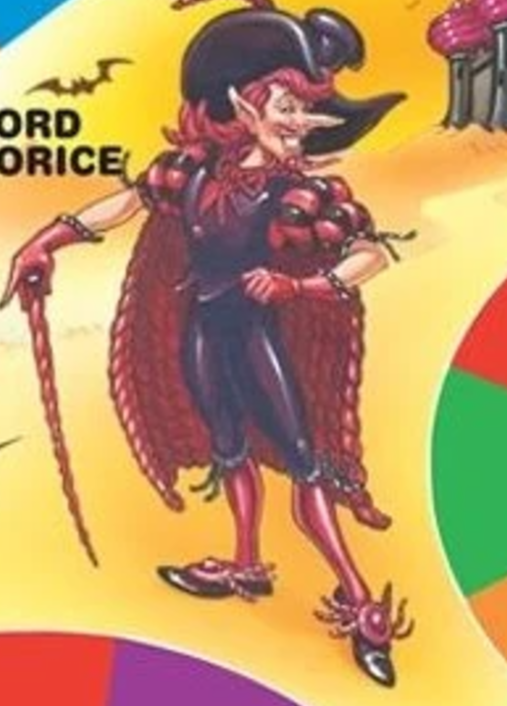
Knight // Mr. Mint
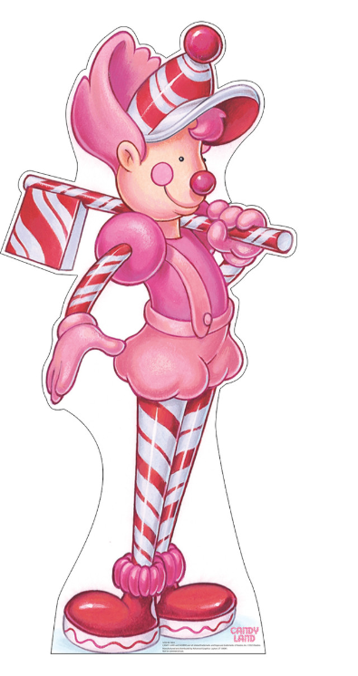
Bishop // Duke of Swirl
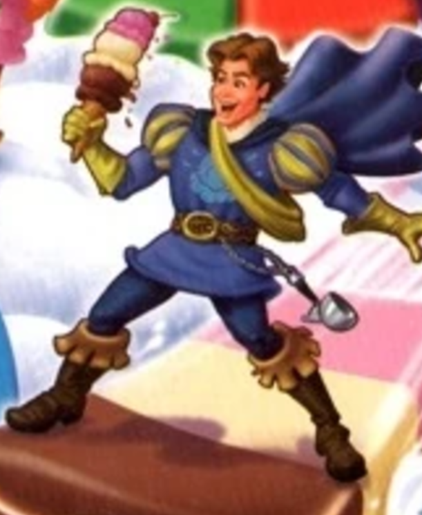
Pawn // Gingerbread Man

Pawn
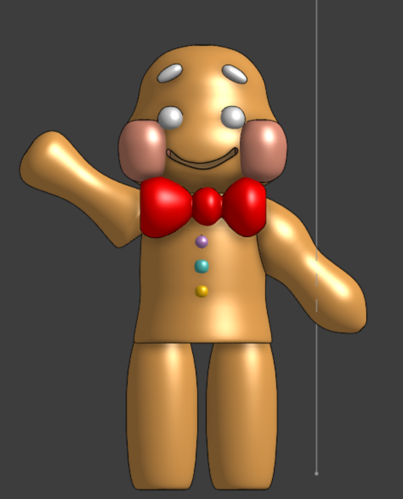
I started with the gingerbread man first because I knew it would be the easiest. The only tools I ended up using were revolve and transform. I used transform because I had problems with the shapes I wanted to revole being inside preexisting shapes and being invisible. Otherwise this was a very simple chest peice.
King
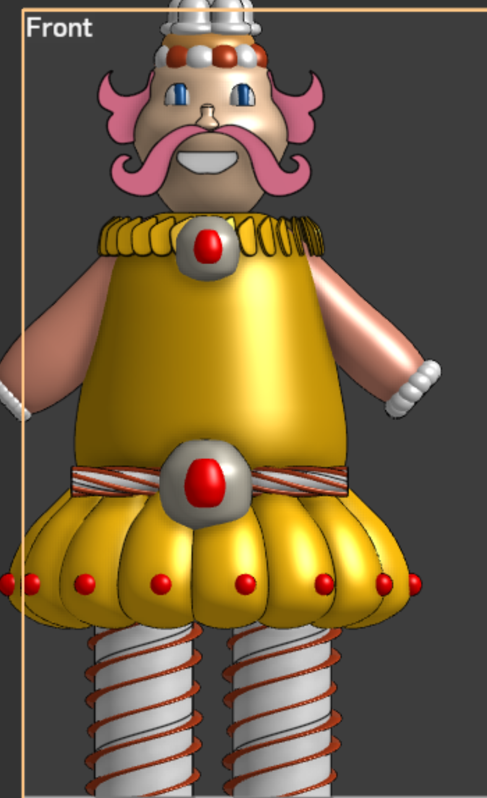
I decided to move on to the most difficult chess piece because I wanted to get it over with because I knew with onshape get all the shapes and details would be finicky. I decide to remove a lot of details because I knew it would be impossible for a beginner or at the very least way too time consuming For this chest piece I used circular pattern, transform, revolve, extrude, helix, and sweep.
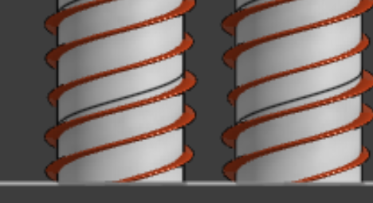
For the kings legs I used the helix tool to make a path for the sweep to follow so it would have a candy cane affect.
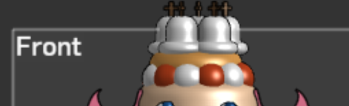
I decided to simplify the kings crow and add the cross on top to resemble the actual chess piece. Since you can't draw on a curved plane in onshape I decided to use circular pattern spheres around the kings head and alternate colors to give a similar affect.
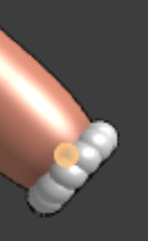
For the Kings poofy sleeves I did a similar thing to the kings crown but kept the colors uniform.
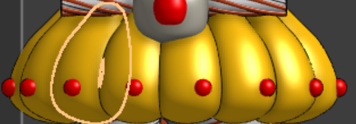
For the skirt I made a tear drop shape then patterned it around the kings lower body and for the cherries I did the same thing.
Queen
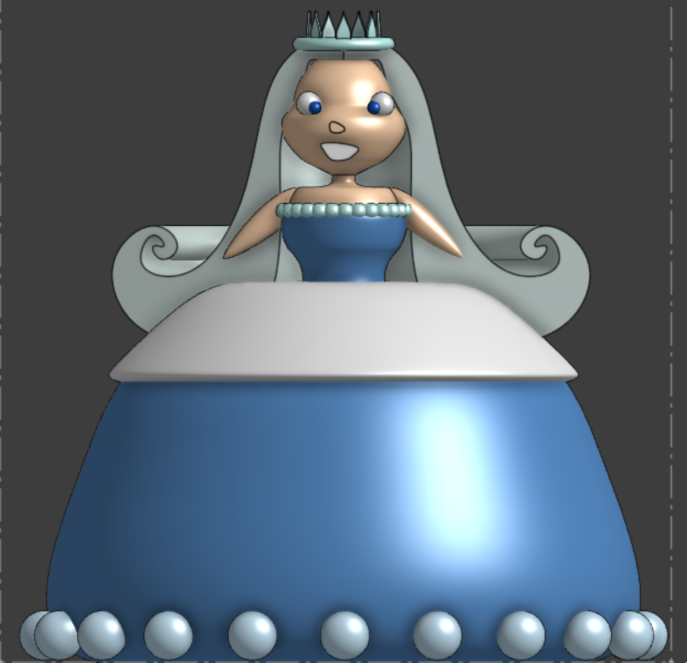
After I did the King I decided to go down is height order now doing the queen. Fortunately for the queen I didn't have to omit as many details and could keep most, I only had to simplify complicated details. For this chess piece I used revolve, extrude, and circular pattern
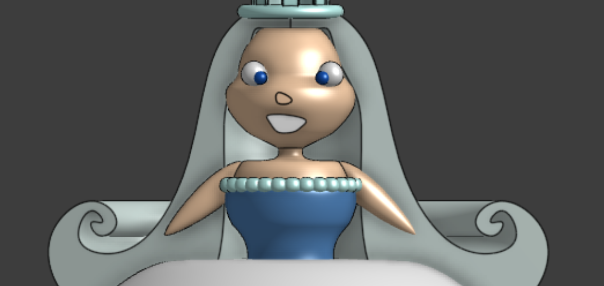
For her hair I used the revolve tool but instead of going the full way around I went half way
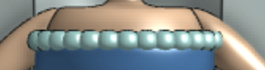
Since I wasn't able to do the drippy affect that her top has I used spheres instead and patterned them around her blouse. I personally like how it looks because it looks like a elegant pearl necklace.
Castle
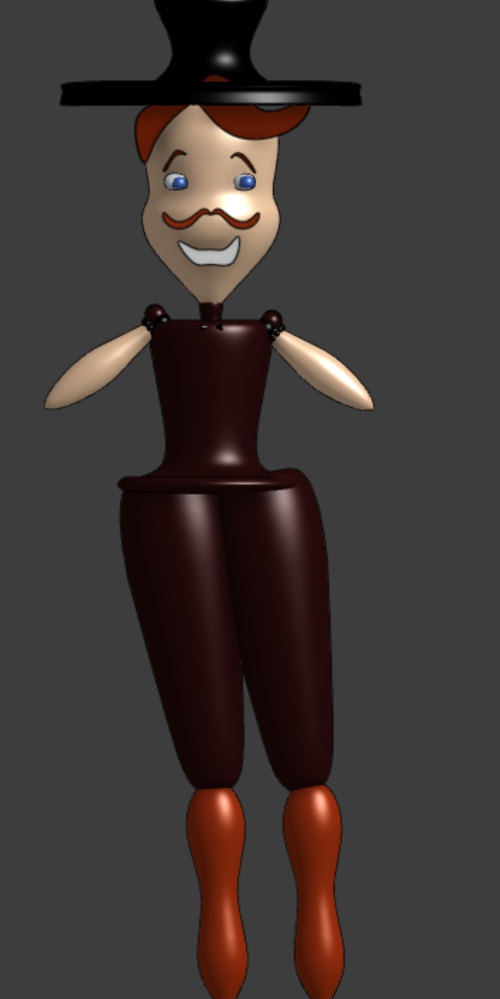
This is my personal favorite chess piece because of his face and hat. For this chess piece there weren't many details to omit so I managed to get very close. This chess piece is the third closest to the original in my opinion. For this chess piece I used revolve, extrude, and circular pattern. For this piece I won't explain anything since everything I did for it is similar to what I explained for the other three pieces.
Knight

Mr. Mint comes as a close second for being my favorite because his face is silly. This once is the second most close I could get to the original since his design is very simple. For this chess piece I used revolve, extrude, helix, and sweep. I won't explain anything for this piece wither since what I did for the hat, legs, and arms are exactly what I did for the kings legs. Then everything else is self explanitory.
Bishop
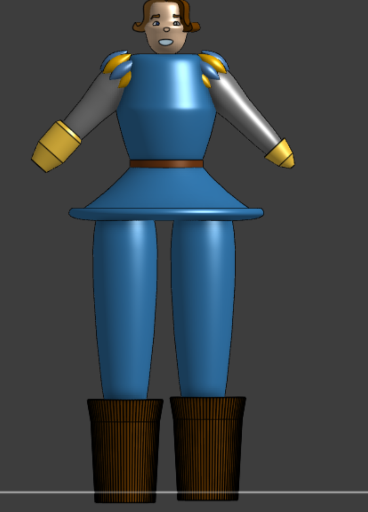
This chess piece takes second place for being the least accurate to the original. Mainly because his proportions are all off but also because I had to remove a few details from the piece. For this chess piece I used revolve, extrude, and circular pattern
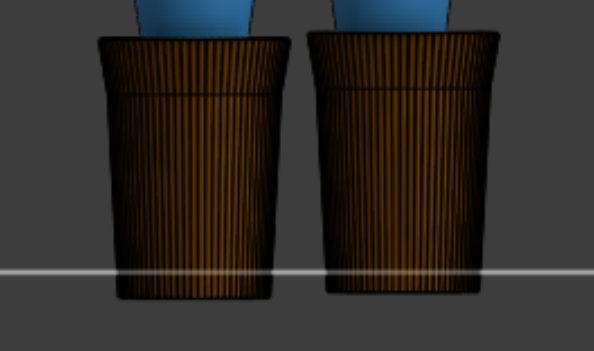
This chess piece takes second place for being the least accurate to the original. Mainly because his proportions are all off but also because I had to remove a few details from the piece. For this chess piece I used revolve, extrude, and circular pattern
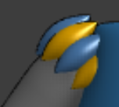
For his poofy sleeves I did a similar thing to what I did for the king and queen pieces, but instead of a sphere its more of a slim football shape.

The lineup of chess pieces
Back to 9th grade projects